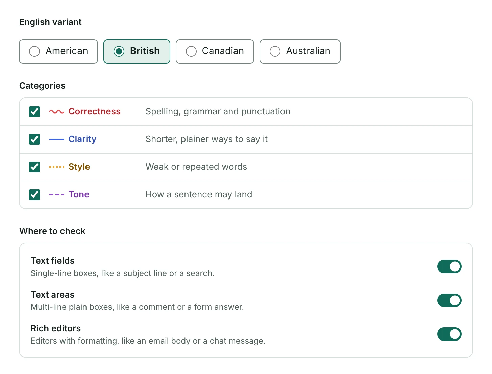
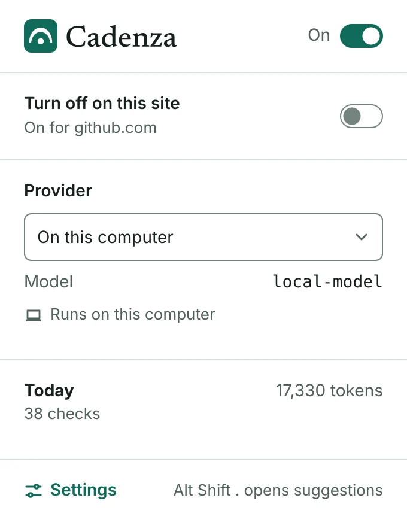
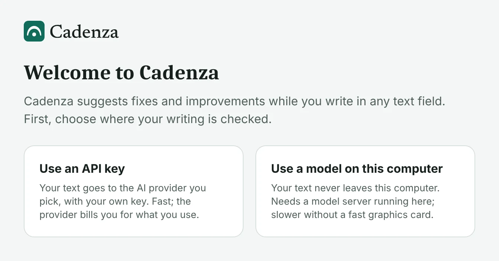

A quiet writing assistant for the fields you already type in
Cadenza underlines what it would change in email, comments, chat and forms, using the AI provider you choose with your own key, or a model on your computer.
Install Cadenza See where your text goes
For Chrome and other Chromium browsers.
New message To priya@example.com
Hi Priya,
Thanks for sending the draft. I have went through it twice, and their are two things to fix before friday.
In order to keep the launch on track, could you basically cut the second section in half?
Obviously you missed my last note about the pricing table.
Thanks,
Sam
Your text takes one trip
Cadenza has no server and no account. When you pause typing, it sends the paragraphs you changed to the one place you picked.
The field you’re typing in
-
A hosted AI provider
Straight from your browser, with your own API key. You pay the provider at its rates, and its privacy terms cover what it does with the text.
-
A model on your computer
Or one on your local network. The text doesn’t leave your machine or network.
A Cadenza server Nothing in between
Never read
- Password, payment card and one-time-code fields
- Code editors
- Fields a website marks as not to be checked
- Kinds of field you turn off
- Anything on a site you turn off
- Google Docs, which Cadenza doesn’t support yet
Kept in your browser
- Your API keys, out of reach of the pages you visit, with an optional passphrase
- Your settings, dictionary and ignored suggestions
- A count of each day’s checks, for 31 days
- Nothing synced to other devices
- No analytics, tracking or ads
Make it fit how you write
Choose what it points out
Pick American, British, Canadian or Australian English. Turn each kind of suggestion on or off, say how formal you want to sound and who is reading, and choose which kinds of field Cadenza checks.
Add names and terms to your dictionary. Use “Don’t suggest this again” for anything you want left alone, and undo it if you change your mind.

One click from any page
The toolbar button turns Cadenza off for the site you’re on, or everywhere. It switches between your saved providers and shows today’s checks and tokens. For hosted providers, you can set a daily limit.
Or stay on the keyboard
Alt Shift . opens the suggestion at the cursor, and pressing it again opens the whole list. Esc puts you back where you were typing. You can change the shortcut in Chrome.

Install Cadenza
Until Cadenza is in the Chrome Web Store, you build it from source. You need Git and Node.js 22.12 or later.
-
Build the extension
git clone https://github.com/mateusrodrigues/cadenza.git cd cadenza npm ci npm run build -
Load it into your browser
Open
chrome://extensionsand turn on Developer mode. Choose Load unpacked and select thepackages/extension/.output/chrome-mv3folder. -
Add it from the Chrome Web Store
-
Choose where your writing is checked
A setup page opens. Paste an API key, or connect a model server running on this computer. Then type in any text field.

Questions
What does it cost?
Cadenza needs no account. With a hosted provider, you pay that provider for what you use, at its rates, and a daily limit can cap the number of checks. A model on your own computer has no provider bill.
Which providers can I use?
The settings list hosted providers and local model servers, and you can add a compatible endpoint of your own. Cadenza lists the models your provider offers, and a connection test shows how quickly one replies.
Will it change my text on its own?
No. A change is made only when you accept it.
How good are the suggestions?
That depends on the model you choose. A model on your computer keeps your text with you, but is slower without a fast graphics card.
Does it work in Google Docs?
Not yet. Cadenza stays off in Google Docs. It works in plain text boxes and in rich editors.
Which languages does it check?
Cadenza is made for English, in American, British, Canadian or Australian spelling.